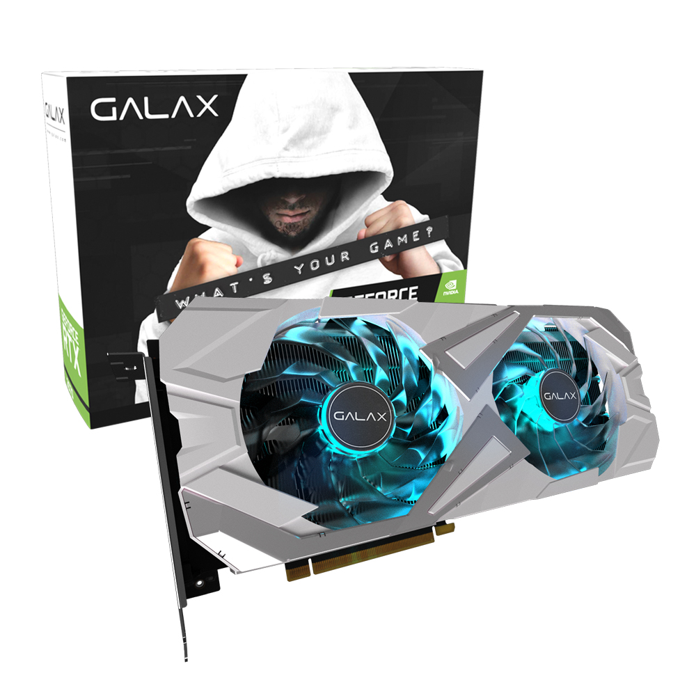

갤럭시 GALAX 지포스 RTX 3070 EX WHITE OC D6 8GB
RTX 3070 / 8nm / 부스트클럭: 1770MHz / 스트림 프로세서: 5888개 / PCIe4.0x16 / GDDR6(DDR6) / 출력단자: HDMI2.1, DP1.4 / 부가기능: 제로팬(0-dB기술), 8K 해상도 지원, 4K 해상도 지원, HDR 지원, HDCP 2.3 / 사용전력: 최대 240W / 정격파워 650W 이상 / 전원 포트: 8핀 x2개 / 전원부: 12페이즈 / 2개 팬 / 가로(길이): 285mm / 백플레이트 / LED 라이트 / Dr.MOS 모스펫 / XTREME TUNER / A/S 3년 / 그래픽카드 지지대 포함 동영상
ZOTAC GAMING 지포스 RTX 3070 TWIN Edge OC D6 8GB White
RTX 3070 / 8nm / 부스트클럭: 1755MHz / 스트림 프로세서: 5888개 / PCIe4.0x16 / GDDR6(DDR6) / 출력단자: HDMI2.1, DP1.4 / 부가기능: 제로팬(0-dB기술), 8K 해상도 지원, 4K 해상도 지원, HDR 지원, HDCP 2.3 / 사용전력: 최대 220W / 정격파워 650W 이상 / 전원 포트: 8핀 x2개 / 전원부: 10+2페이즈 / 2개 팬 / 가로(길이): 231.9mm / 백플레이트 / LED 라이트 / A/S 3년